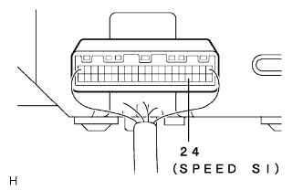

メーター&ゲージシステム スピードメーター作動不良 |
| 手順1 | TaSCANデータ読み取り（ブレーキアクチユエータASSY） |
SSTを使用して、画面表示に従って操作を行い、[ECUデータモニター]画面を表示させてコンピュータデータを点検する。
| 項目名 (記号) | 項目名解説 | 点検条件 | 画面表示 | 異常箇所 |
|---|---|---|---|---|
| 車両スピード(SPD1) | メータ車速を表す 0-255ｋｍ/ｈ |
|
| ブレーキアクチユエータASSY |
|
| ||||
| OK | |
| 手順2 | コンビネーションメータASSY点検（SPEED SI端子出力電圧） |
点検前準備
コンビネーシヨンメータASSYのコネクタが接続されていることを確認する。
ブレーキアクチユエータASSYのコネクタを切り離す。
電圧点検
|  |
SST(トヨタエレクトリカルテスター)を使用して、コンビネーシヨンメータASSYのコネクタ24(SPEED SI)端子←→ボデーアース間の電圧を点検する。
| テスター接続 | 項目 | 条件 | 基準値 |
|---|---|---|---|
| 24(SPEED SI) ←→ボデーアース | 電圧 | IGスイツチON | 10-14V |
|
| ||||
| OK | |
| 手順3 | コンビネーションメータASSY点検（入力波形） |
点検前準備
コンビネーシヨンメータASSYのコネクタが接続されていることを確認する。
ブレーキアクチユエータASSYのコネクタを接続する。
波形点検
 |
オシロスコープを使用して、コンビネーシヨンメータASSYのコネクタ24(SPEED SI)端子←→ボデーアース間の波形を点検する。
| 項目 | 内容 |
|---|---|
| 測定端子 | 24(SPEED SI)←→ボデーアース |
| 計器セット | 5V/DIV、20ｍｓ/DIV |
| 測定条件 | 車速約20ｋｍ/ｈで走行 |
|
| ||||
| NG | |
| 手順4 | ワイヤハーネスおよびコネクター点検（コンビネーシヨンメータASSY-ブレーキアクチユエータASSY） |
点検前準備
コンビネーシヨンメータASSYのコネクタが接続されていることを確認する。
ブレーキアクチユエータASSYのコネクタを切り離す。
電圧点検
 |
SST(トヨタエレクトリカルテスター)を使用して、ブレーキアクチユータASSYの車両ワイヤハーネス側コネクタSP1端子←→ボデーアース間の電圧を点検する。
| テスター接続 | 項目 | 条件 | 基準 |
|---|---|---|---|
| 26(SP1) ←→ボデーアース | 電圧 | IGスイツチON | 10-14V |
|
| ||||
| OK | ||
| ||